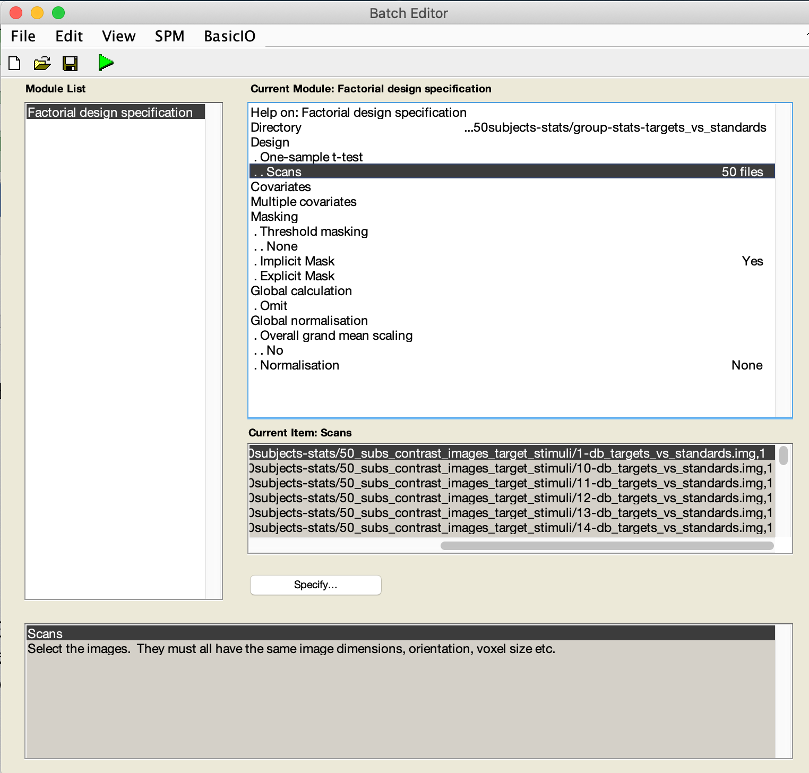

Mind fMRI Image Acquisition and Analyses Course - Cheat Sheet for
Second Level (one sample t-test).
We have prepared 50 subjects worth of data for this exercise.
Two different contrasts have been included. Targets vs standards and
Novels vs standards.
These data are located in
../mind/data/auditory_oddball/50subjects-stats/50_subs_contrast_images_target_stimuli
These data are located in
../mind/data/auditory_oddball/50subjects-stats/50_subs_contrast_images_target_stimuli
Each of these directories contains 50 derivative boosted contrast
images. Recall that the derivative boost adjusts the amplitude of the
HRF to address latency effects. See the Calhoun et al paper.
Importantly, the derivative boost is necessary if you want to utilize
the temporal (and/or dispersion) components from the first level into
the second level analyses.
To start off second level (group) analyses, click on the spm button
‘Specify 2nd level’. This will pull up a batch GUI. The batch
GUI first requires you to specify a directory to place the statistics
files in. So select:
From here ../mind/data/auditory_oddball/50subjects-stats/ select
“Group-stats-targets_vs_standards”
The next data that needs to be entered are the contrast scans for
analyses. Highlight/click on ‘scans’ and then go down to ‘specify’. Go
to the directory:
../mind/data/auditory_oddball/50subjects-stats/50_subs_contrast_images_target_stimuli
and right click and select ALL the images.
1-db_targets_vs_standards.img
2-db_targets_vs_standards.img
……
50-db_targets_vs_standards.img
Please note the ordering of the images in the matlab GUI – you will
see that it selects them 1, 10, 11, 12, 13, 14, 15, 16, 17, 18, 19, 2,
20, 21……. This is not from 1-50……so this is ok, but if you enter any
covariates (i.e., age) then your vector of age data MUST match up to the
order of these images…….(this ordering was done on purpose to highlight
this common problem).
Click ‘done’ once the images are selected.

Click on the green arrow and this will compute the design matrix and
create an SPM.mat file.
Now click ‘estimate’ button in spm. Select the SPM.mat in the
“Group-stats-targets_vs_standards” directory.
The green arrow will illuminate. Click it to run this model.
Now you may review the results.
Click on ‘Results’. Select the SPM.mat file above.
The contrast manager will come up. Define new contrast. Specify a
name ‘target vs standard’. Enter a contrast value of ‘1’. Click submit,
then click ok. Then click done.
Estimate the contrast and then complete the subsequent steps (no
masking, FWE, p < .05) (thresholding at p < .05 FWE Corrected) and
this will display the group results. You may then play around with the
display/plot routines to interrogate the data.
Repeat the steps above if you want analyze the novel stimuli.